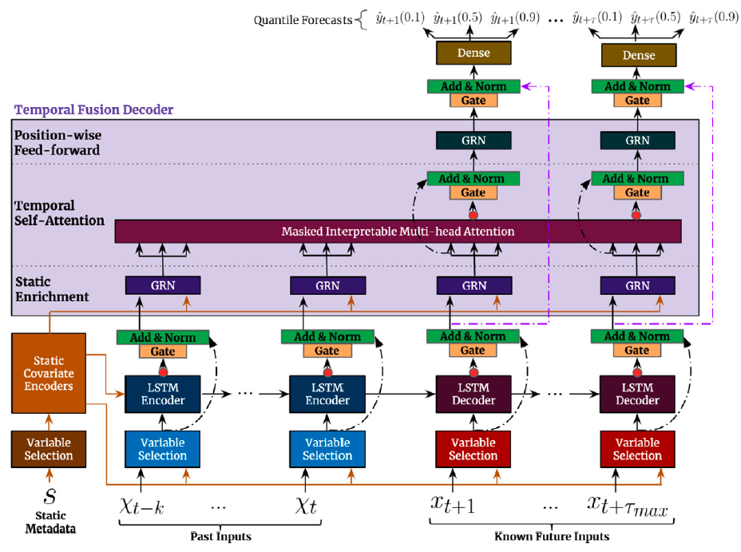
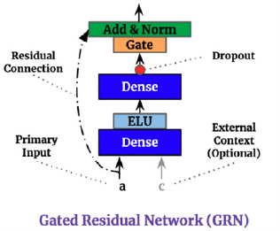
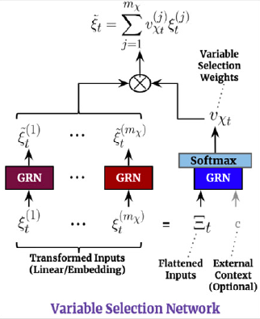

import numpy as np
import pandas as pd
import pytorch_lightning as pl
import matplotlib.pyplot as plt
from neuralforecast import NeuralForecast
from neuralforecast.losses.pytorch import MQLoss, DistributionLoss
from neuralforecast.tsdataset import TimeSeriesDataset
from neuralforecast.utils import AirPassengers, AirPassengersPanel, AirPassengersStatic
#AirPassengersPanel['y'] = AirPassengersPanel['y'] + 10
Y_train_df = AirPassengersPanel[AirPassengersPanel.ds<AirPassengersPanel['ds'].values[-12]] # 132 train
Y_test_df = AirPassengersPanel[AirPassengersPanel.ds>=AirPassengersPanel['ds'].values[-12]].reset_index(drop=True) # 12 test
fcst = NeuralForecast(
models=[TFT(h=12, input_size=48,
hidden_size=20,
#loss=MAE(),
#loss=MQLoss(level=[80, 90]),
loss=DistributionLoss(distribution='Normal', level=[80, 90]),
learning_rate=0.01,
stat_exog_list=['airline1'],
hist_exog_list=['y_[lag12]'],
futr_exog_list=['trend'],
max_epochs=200,
scaler_type='robust',
#scaler_type=None,
windows_batch_size=None,
enable_progress_bar=True),
],
freq='M'
)
fcst.fit(df=Y_train_df, static_df=AirPassengersStatic)
forecasts = fcst.predict(futr_df=Y_test_df)
# Plot quantile predictions
Y_hat_df = forecasts.reset_index(drop=False).drop(columns=['unique_id','ds'])
plot_df = pd.concat([Y_test_df, Y_hat_df], axis=1)
plot_df = pd.concat([Y_train_df, plot_df])
plot_df = plot_df[plot_df.unique_id=='Airline1'].drop('unique_id', axis=1)
plt.plot(plot_df['ds'], plot_df['y'], c='black', label='True')
try:
plt.plot(plot_df['ds'], plot_df['TFT-median'], c='blue', label='median')
plt.fill_between(x=plot_df['ds'],
y1=plot_df['TFT-lo-90.0'], y2=plot_df['TFT-hi-90.0'],
alpha=0.4, label='level 90')
except:
plt.plot(plot_df['ds'], plot_df['TFT'], c='blue', label='median')
plt.legend()
plt.grid()
plt.plot()TFT
In summary Temporal Fusion Transformer (TFT) combines gating layers, an LSTM recurrent encoder, with multi-head attention layers for a multi-step forecasting strategy decoder.
TFT’s inputs are static exogenous \(\mathbf{x}^{(s)}\), historic exogenous \(\mathbf{x}^{(h)}_{[:t]}\), exogenous available at the time of the prediction \(\mathbf{x}^{(f)}_{[:t+H]}\) and autorregresive features \(\mathbf{y}_{[:t]}\), each of these inputs is further decomposed into categorical and continuous. The network uses a multi-quantile regression to model the following conditional probability:\[\mathbb{P}(\mathbf{y}_{[t+1:t+H]}|\;\mathbf{y}_{[:t]},\; \mathbf{x}^{(h)}_{[:t]},\; \mathbf{x}^{(f)}_{[:t+H]},\; \mathbf{x}^{(s)})\]
References
- Jan Golda, Krzysztof Kudrynski. “NVIDIA, Deep Learning Forecasting Examples”
- Bryan Lim, Sercan O. Arik, Nicolas Loeff, Tomas Pfister, “Temporal Fusion Transformers for interpretable multi-horizon time series forecasting”

1. Auxiliary Functions
1.1 Gating Mechanisms
The Gated Residual Network (GRN) provides adaptive depth and network complexity capable of accommodating different size datasets. As residual connections allow for the network to skip the non-linear transformation of input \(\mathbf{a}\) and context \(\mathbf{c}\).
\[\begin{align} \eta_{1} &= \mathrm{ELU}(\mathbf{W}_{1}\mathbf{a}+\mathbf{W}_{2}\mathbf{c}+\mathbf{b}_{1}) \\ \eta_{2} &= \mathbf{W}_{2}\eta_{1}+b_{2} \\ \mathrm{GRN}(\mathbf{a}, \mathbf{c}) &= \mathrm{LayerNorm}(a + \textrm{GLU}(\eta_{2})) \end{align}\]
The Gated Linear Unit (GLU) provides the flexibility of supressing unnecesary parts of the GRN. Consider GRN’s output \(\gamma\) then GLU transformation is defined by:
\[\mathrm{GLU}(\gamma) = \sigma(\mathbf{W}_{4}\gamma +b_{4}) \odot (\mathbf{W}_{5}\gamma +b_{5})\]

1.2 Variable Selection Networks
TFT includes automated variable selection capabilities, through its variable selection network (VSN) components. The VSN takes the original input \(\{\mathbf{x}^{(s)}, \mathbf{x}^{(h)}_{[:t]}, \mathbf{x}^{(f)}_{[:t]}\}\) and transforms it through embeddings or linear transformations into a high dimensional space \(\{\mathbf{E}^{(s)}, \mathbf{E}^{(h)}_{[:t]}, \mathbf{E}^{(f)}_{[:t+H]}\}\).
For the observed historic data, the embedding matrix \(\mathbf{E}^{(h)}_{t}\) at time \(t\) is a concatenation of \(j\) variable \(e^{(h)}_{t,j}\) embeddings: \[\begin{align} \mathbf{E}^{(h)}_{t} &= [e^{(h)}_{t,1},\dots,e^{(h)}_{t,j},\dots,e^{(h)}_{t,n_{h}}] \\ \mathbf{\tilde{e}}^{(h)}_{t,j} &= \mathrm{GRN}(e^{(h)}_{t,j}) \end{align}\]
The variable selection weights are given by: \[s^{(h)}_{t}=\mathrm{SoftMax}(\mathrm{GRN}(\mathbf{E}^{(h)}_{t},\mathbf{E}^{(s)}))\]
The VSN processed features are then: \[\tilde{\mathbf{E}}^{(h)}_{t}= \sum_{j} s^{(h)}_{j} \tilde{e}^{(h)}_{t,j}\]

1.3. Multi-Head Attention
To avoid information bottlenecks from the classic Seq2Seq architecture, TFT incorporates a decoder-encoder attention mechanism inherited transformer architectures (Li et. al 2019, Vaswani et. al 2017). It transform the the outputs of the LSTM encoded temporal features, and helps the decoder better capture long-term relationships.
The original multihead attention for each component \(H_{m}\) and its query, key, and value representations are denoted by \(Q_{m}, K_{m}, V_{m}\), its transformation is given by:
\[\begin{align} Q_{m} = Q W_{Q,m} \quad K_{m} = K W_{K,h} \quad V_{m} = V W_{V,m} \\ H_{m}=\mathrm{Attention}(Q_{m}, K_{m}, V_{m}) = \mathrm{SoftMax}(Q_{m} K^{\intercal}_{m}/\mathrm{scale}) \; V_{m} \\ \mathrm{MultiHead}(Q, K, V) = [H_{1},\dots,H_{M}] W_{M} \end{align}\]
TFT modifies the original multihead attention to improve its interpretability. To do it it uses shared values \(\tilde{V}\) across heads and employs additive aggregation, \(\mathrm{InterpretableMultiHead}(Q,K,V) = \tilde{H} W_{M}\). The mechanism has a great resemblence to a single attention layer, but it allows for \(M\) multiple attention weights, and can be therefore be interpreted as the average ensemble of \(M\) single attention layers.
\[\begin{align} \tilde{H} &= \left(\frac{1}{M} \sum_{m} \mathrm{SoftMax}(Q_{m} K^{\intercal}_{m}/\mathrm{scale}) \right) \tilde{V} = \frac{1}{M} \sum_{m} \mathrm{Attention}(Q_{m}, K_{m}, \tilde{V}) \\ \end{align}\]
2. TFT Architecture
The first TFT’s step is embed the original input \(\{\mathbf{x}^{(s)}, \mathbf{x}^{(h)}, \mathbf{x}^{(f)}\}\) into a high dimensional space \(\{\mathbf{E}^{(s)}, \mathbf{E}^{(h)}, \mathbf{E}^{(f)}\}\), after which each embedding is gated by a variable selection network (VSN). The static embedding \(\mathbf{E}^{(s)}\) is used as context for variable selection and as initial condition to the LSTM. Finally the encoded variables are fed into the multi-head attention decoder.
\[\begin{align} c_{s}, c_{e}, (c_{h}, c_{c}) &=\textrm{StaticCovariateEncoder}(\mathbf{E}^{(s)}) \\ h_{[:t]}, h_{[t+1:t+H]} &=\textrm{TemporalCovariateEncoder}(\mathbf{E}^{(h)}, \mathbf{E}^{(f)}, c_{h}, c_{c}) \\ \hat{\mathbf{y}}^{(q)}_{[t+1:t+H]} &=\textrm{TemporalFusionDecoder}(h_{[t+1:t+H]}, c_{e}) \end{align}\]
2.1 Static Covariate Encoder
The static embedding \(\mathbf{E}^{(s)}\) is transformed by the StaticCovariateEncoder into contexts \(c_{s}, c_{e}, c_{h}, c_{c}\). Where \(c_{s}\) are temporal variable selection contexts, \(c_{e}\) are TemporalFusionDecoder enriching contexts, and \(c_{h}, c_{c}\) are LSTM’s hidden/contexts for the TemporalCovariateEncoder.
\[\begin{align} c_{s}, c_{e}, (c_{h}, c_{c}) & = \textrm{GRN}(\textrm{VSN}(\mathbf{E}^{(s)})) \end{align}\]
2.2 Temporal Covariate Encoder
TemporalCovariateEncoder encodes the embeddings \(\mathbf{E}^{(h)}, \mathbf{E}^{(f)}\) and contexts \((c_{h}, c_{c})\) with an LSTM.
\[\begin{align} \tilde{\mathbf{E}}^{(h)}_{[:t]} & = \textrm{VSN}(\mathbf{E}^{(h)}_{[:t]}, c_{s}) \\ \tilde{\mathbf{E}}^{(h)}_{[:t]} &= \mathrm{LSTM}(\tilde{\mathbf{E}}^{(h)}_{[:t]}, (c_{h}, c_{c})) \\ h_{[:t]} &= \mathrm{Gate}(\mathrm{LayerNorm}(\tilde{\mathbf{E}}^{(h)}_{[:t]})) \end{align}\]
An analogous process is repeated for the future data, with the main difference that \(\mathbf{E}^{(f)}\) contains the future available information.
\[\begin{align} \tilde{\mathbf{E}}^{(f)}_{[t+1:t+h]} & = \textrm{VSN}(\mathbf{E}^{(h)}_{t+1:t+H}, \mathbf{E}^{(f)}_{t+1:t+H}, c_{s}) \\ \tilde{\mathbf{E}}^{(f)}_{[t+1:t+h]} &= \mathrm{LSTM}(\tilde{\mathbf{E}}^{(h)}_{[t+1:t+h]}, (c_{h}, c_{c})) \\ h_{[t+1:t+H]} &= \mathrm{Gate}(\mathrm{LayerNorm}(\tilde{\mathbf{E}}^{(f)}_{[t+1:t+h]})) \end{align}\]
2.3 Temporal Fusion Decoder
The TemporalFusionDecoder enriches the LSTM’s outputs with \(c_{e}\) and then uses an attention layer, and multi-step adapter. \[\begin{align} h_{[t+1:t+H]} &= \mathrm{MultiHeadAttention}(h_{[:t]}, h_{[t+1:t+H]}, c_{e}) \\ h_{[t+1:t+H]} &= \mathrm{Gate}(\mathrm{LayerNorm}(h_{[t+1:t+H]}) \\ h_{[t+1:t+H]} &= \mathrm{Gate}(\mathrm{LayerNorm}(\mathrm{GRN}(h_{[t+1:t+H]})) \\ \hat{\mathbf{y}}^{(q)}_{[t+1:t+H]} &= \mathrm{MLP}(h_{[t+1:t+H]}) \end{align}\]
3. TFT methods
TFT
TFT (h, input_size, tgt_size=1, stat_exog_list=None, hist_exog_list=None, futr_exog_list=None, hidden_size=128, n_head=4, attn_dropout=0.0, dropout=0.1, loss=MAE(), learning_rate=0.001, batch_size=32, windows_batch_size=1024, step_size=1, scaler_type='robust', num_workers_loader=0, drop_last_loader=False, random_seed=1, **trainer_kwargs)
TFT
The Temporal Fusion Transformer architecture (TFT) is an Sequence-to-Sequence model that combines static, historic and future available data to predict an univariate target. The method combines gating layers, an LSTM recurrent encoder, with and interpretable multi-head attention layer and a multi-step forecasting strategy decoder.
Parameters:
h: int, Forecast horizon.
input_size: int, autorregresive inputs size, y=[1,2,3,4] input_size=2 -> y_[t-2:t]=[1,2].
stat_exog_list: str list, static continuous columns.
hist_exog_list: str list, historic continuous columns.
futr_exog_list: str list, future continuous columns.
hidden_size: int, units of embeddings and encoders.
dropout: float (0, 1), dropout of inputs VSNs.
attn_dropout: float (0, 1), dropout of fusion decoder’s attention layer.
shared_weights: bool, If True, all blocks within each stack will share parameters.
activation: str, activation from [‘ReLU’, ‘Softplus’, ‘Tanh’, ‘SELU’, ‘LeakyReLU’, ‘PReLU’, ‘Sigmoid’].
loss: PyTorch module, instantiated train loss class from losses collection.
learning_rate: float (0, 1), initial optimization learning rate.
batch_size: int, number of different series in each batch.
windows_batch_size: int=None, windows sampled from rolled data, default uses all.
step_size: int=1, step size between each window of temporal data.
scaler_type: str=‘robust’, type of scaler for temporal inputs normalization see temporal scalers.
random_seed: int, random seed initialization for replicability.
num_workers_loader: int=os.cpu_count(), workers to be used by TimeSeriesDataLoader.
drop_last_loader: bool=False, if True TimeSeriesDataLoader drops last non-full batch.
**trainer_kwargs: int, keyword trainer arguments inherited from PyTorch Lighning’s trainer.
TFT.fit
TFT.fit (dataset, val_size=0, test_size=0)
Fit.
The fit method, optimizes the neural network’s weights using the initialization parameters (learning_rate, windows_batch_size, …) and the loss function as defined during the initialization. Within fit we use a PyTorch Lightning Trainer that inherits the initialization’s self.trainer_kwargs, to customize its inputs, see PL’s trainer arguments.
The method is designed to be compatible with SKLearn-like classes and in particular to be compatible with the StatsForecast library.
By default the model is not saving training checkpoints to protect disk memory, to get them change enable_checkpointing=True in __init__.
Parameters:
dataset: NeuralForecast’s TimeSeriesDataset, see documentation.
val_size: int, validation size for temporal cross-validation.
test_size: int, test size for temporal cross-validation.
TFT.predict
TFT.predict (dataset, test_size=None, step_size=1, **data_module_kwargs)
Predict.
Neural network prediction with PL’s Trainer execution of predict_step.
Parameters:
dataset: NeuralForecast’s TimeSeriesDataset, see documentation.
test_size: int=None, test size for temporal cross-validation.
step_size: int=1, Step size between each window.
**data_module_kwargs: PL’s TimeSeriesDataModule args, see documentation.